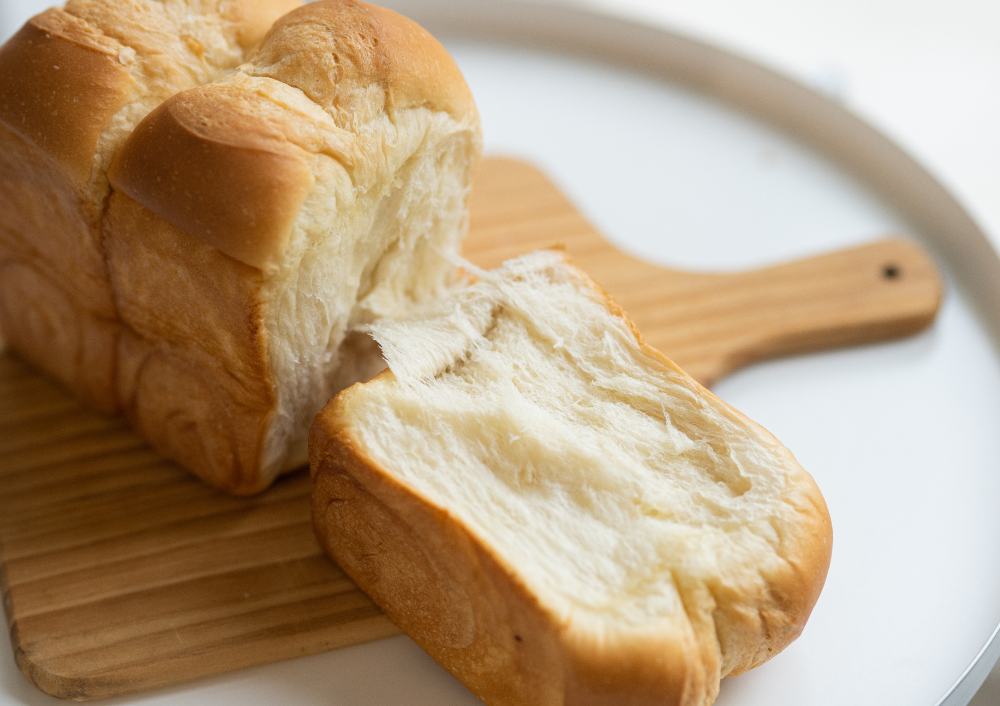

Les Viennoiseries Incontournables
-

Le Croissant
Le Croissant
Doré à souhait, croustillant à l’extérieur et fondant à l’intérieur, un nuage de beurre et de légèreté à chaque bouchée. Son parfum chaud et réconfortant évoque les matins à la française, simples, élégants et pleins de douceur.
-

Pain au Chocolat
Pain au Chocolat
Deux barres de chocolat fondant enveloppées d’une pâte feuilletée dorée… un plaisir simple, irrésistible et toujours réconfortant. Chaque bouchée mêle la richesse du cacao à la tendresse du beurre, pour un moment de pur bonheur.
-

La Brioche
La Brioche
Moelleuse, légèrement sucrée et délicatement parfumée au beurre, une douceur qui fond dans la bouche et réveille les souvenirs d’enfance. Dorée à l’extérieur, légère et filante à l’intérieur, elle se savoure aussi bien nature qu’accompagnée d’une touche de confiture.


La Pâtisserie en Vidéo
Entrez dans l’univers fascinant de la pâtisserie française avec Cédric Grolet. Découvrez comment il transforme une simple fraise en un trompe-l’œil enrobé de chocolat, alliant précision, élégance et créativité. Un moment magique à ne pas manquer pour tous les amoureux du sucré !